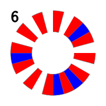

-- If you see a line of code with two dashes at the start like this, it’s called a comment.
-- This is text that the computer will always ignore, so you can annotate your code.The basic format for making sound in Tidal looks like this
You can stop making a sound using silence:
d1 $ silencePick a different sound from the same set, with :
Some samples which come with Tidal are listed below. Try some out!
flick sid can metal future gabba sn mouth co gretsch mt arp h cp
cr newnotes bass hc tabla bass0 hh bass1 bass2 oc bass3 ho odx
diphone2 house off ht tink perc bd industrial pluck trump printshort
jazz voodoo birds3 procshort blip drum jvbass psr wobble drumtraks koy
rave bottle kurt latibro rm sax lighter lt arpy feel less stab ulYou can see what other sounds there are (or add your own) by looking in the Dirt-Samples folder. You can find it via the SuperCollider menu: File > Open user support directory > downloaded-quarks > Dirt-Samples.
Make a sequence
The more steps in the sequence, the faster it goes:
This is because of the way Tidal handles time. There is a universal ‘cycle’ (sort of like a musical ‘bar’) which is always running. Tidal will play all of the sounds between the speech marks in one cycle, unless we tell it not to (we’ll learn how to do that later). You’ll also notice Tidal will space the sounds out evenly within the cycle Which means we can end up with polyrhythmic structures (more on those later).
We can change the length of the cycle using cps (cycles per second) - this is a bit like bpm (beats per minute).
cps 0.6You can use d1, d2, d3…d9 to play multiple sequences at the same time
d2 $ sound "sn sn:2 sn bd sn"You can stop all the running patterns with hush.
hush
You can pause everything by changing the cycle length to a negative number (remember to put negative numbers in brackets).
cps (-1)Start it up again with a positive number
cps 0.6Or you can solo one channel - but be warned, you can’t unsolo (…but this is coming to the next version of tidal!)
d1 $ sound "arpy cp arpy:2"
d2 $ sound "sn sn:2 bd sn"
solo $ d2 $ sound "sn sn:2 bd sn"Let add some more variety to our sequences.
Add a silence/rest with ~:
Fit a subsequence into a step with square brackets:
This can make for flexible time signatures:
You can put subsequences inside subsequences:
Keep going..
You can repeat a step with *:
This works with subsequences too:
Or you can do the opposite using /:
* works by ‘speeding up’ a step to play it multiple times. / works by ‘slowing it down’.
We can also schedule patterns across cycles using < and >:
– Tidal has lots of effects we can use to change the way things sound
– ‘Vowel’ is a filter which adds a vowel sound - try a, e, i, o and u
d1 $ sound “drum drum drum drum” # vowel “a”
– We create patterns of effects in much the same way we create patterns of sounds
d1 $ sound “drum drum drum drum” # vowel “a o e e”
– Or we can use “<>” to schedule across cycles
d1 $ sound “drum drum drum drum” # vowel “”
– You can add a different letter to pause the vowel effect
d1 $ sound “drum drum drum drum” # vowel “a o p p”
– Tidal does it’s best to map patterns across to one another
d1 $ sound “drum drum drum drum” # vowel “a o e”
– The structure comes from the left - try swapping the parameters
d1 $ vowel “a o ~ i” # sound “drum”
–Health warning This is one of the changes coming up in the new Tidal - you will be able to dictate where the structure comes from
– ‘Gain’ changes the volume of different sounds
d1 $ sound “bd hh sn:1 hh sn:1 hh” # gain “1 0.7 0.5”
– ‘Speed’ and ‘up’ are used for pitching samples
– ‘Speed’ affects the speed of playback, e.g. 2 = up an octave
d1 $ sound “numbers:1 numbers:2 numbers:3 numbers:4” # speed “1 1.5 2 0.5”
– Or we can take the pattern from the ‘speed’ parameter
d1 $ speed “1 2 4” # sound “jungbass:6”
– ‘Up’ pitches the sample up in semitones, e.g. 12 = up an octave
d1 $ up “0 ~ 12 24” # sound “jungbass:6”
– ‘Pan’ allows us to create stereo effects - 0 = left, 0.5 = middle, 1 = right
d1 $ sound “numbers:1 numbers:2 numbers:3 numbers:4” # pan “0 0.5 1”
– ‘Shape’ adds distortion (but be careful - it also makes the sound much louder)
d1 $ sound “kurt:4 kurt:4” # shape “0 0.78” # gain “0.7”
– * feeling brave ?
– http://tidalcycles.org/patterns.html#effects
– delay / delaytime / delayfeedback – cutoff / resonance – room / size
– ‘sine1’ is a continuous pattern following a sine curve from 0 to 1 and back
d1 $ sound "bd*32" # gain sine1
SCALE
| ***************************************************************************************************************** |
| 4. TRANSFORMING SEQUENCES |
| _______________________________________________________________________________ |
| ***************************************************************************************************************** |
– We can start to make much more complex patterns using transformations – Using functions like ‘slow’ you can start to transcend the cycle
– ‘Slow’ stretches the pattern over more cycles
d1 $ sound “arpy arpy:1 arpy:2 arpy:3”
d1 $ slow 2 $ sound “arpy arpy:1 arpy:2 arpy:3”
– ‘Fast’ squashes the pattern into less than one cycle – You might also see people writing ‘density’ - it’s the same thing! – Fast 0.5 is the same as slow 2!
d1 $ fast 2 $ sound “arpy arpy:1 arpy:2 arpy:3”
d1 $ fast 0.5 $ sound “arpy arpy:1 arpy:2 arpy:3”
– ‘Hurry’ is similar to fast, but also applies a speed transformation
d1 $ sound “arpy arpy arpy:1 arpy:2”
d1 $ hurry 2 $ sound “arpy arpy arpy:1 arpy:2”
d1 $ hurry 0.5 $ sound “arpy arpy arpy:1 arpy:2”
– You can reverse a pattern with ‘rev’
d1 $ rev $ sound “arpy arpy:1 arpy:2 arpy:3”
– Or play it forwards and then backwards with ‘palindrome’
d1 $ palindrome $ sound “arpy arpy:1 arpy:2 arpy:3”
– ‘Iter’ starts the pattern at a different point each cycle
d1 $ iter 4 $ sound “arpy arpy:1 arpy:2 arpy:3”
– ‘Every’ allows us to schedule transformations or effects in different cycles – e.g.very fourth cycle, make twice as dense:
d1 $ every 4 (density 2) $ sound “arpy arpy:1 arpy:2 arpy:3”
– or you could schedule an effect using #
d1 $ every 4 (# vowel “a o”) $ sound “arpy arpy:1 arpy:2 arpy:3”
– ‘Jux’ takes a transformation or an effect and plays it in one speaker – the original pattern plays in the other speaker
d1 $ sound “arpy arpy:1 arpy:2 arpy:3”
d1 $ jux (rev) $ sound “arpy arpy:1 arpy:2 arpy:3”
d1 $ jux (hurry 2) $ sound “arpy arpy arpy:1 arpy:2”
– ‘Chunk’ applies a transformation or an effect to the first part of the pattern only
d1 $ chunk 4 (hurry 4) $ sound “arpy arpy:1 arpy:2 arpy:3”
– Feeling brave? More than one transformation is possible - chain them together using ‘.’
d1 $ jux (rev . (slow 1.5)) $ sound “arpy arpy:1 arpy:2 arpy:3”
– Remember that everything is a pattern so we can apply these transformations to our effects too!
d1 $ sound “jvbass [jvbass jvbass] jvbass ~” # up “1 [3 5] 7”
d1 $ sound “jvbass [jvbass jvbass] jvbass ~” # iter 3 (up “1 [3 5] 7”)
– what about slowing down or scaling sine and saw?
| ***************************************************************************************************************** |
| 5. DIFFERENT KINDS OF PATTERNS |
| _______________________________________________________________________________ |
| ***************************************************************************************************************** |
– What is pattern, anyway? – Let’s think about different kinds of pattern and how Tidal can represent them
– Cyclic / repetitive - we can use n to choose samples from a folder, this allows us to apply patterns there too!
d1 $ n “0 1 2 3” # sound “arpy”
– ‘Run’ is a short way of writing out sequential patterns
d1 $ n (run 4) # sound “arpy”
– or we can use ‘..’
d1 $ n “0..4” # sound “arpy”
– Symmetry
d1 $ slow 2 $ n “0 1 2 3 3 2 1 0” # sound “arpy”
d1 $ palindrome $ n (run 4) # sound “arpy”
– Polymetric / polyrhythmic sequences – Play two subsequences at once by using square brackets (sort of like one big subsequence!) separating with a comma:
d1 $ sound “[voodoo voodoo:3, arpy arpy:4 arpy:2]”
– If you use curly brackets instead of square you get a different effect – With square brackets both halves of the sequence are fitted into the cycle (polyrhythm) – With curly brackets the pulse is set by the left hand pattern – The right hand pattern can then overlap (or underlap!) (polymeter)
d1 $ sound “[voodoo voodoo:3, arpy arpy:4 arpy:2]”
d1 $ sound “{voodoo voodoo:3, arpy arpy:4 arpy:2}”
d1 $ sound “[drum bd hh bd, can can:2 can:3 can:4 can:2]”
d1 $ sound “{drum bd hh bd, can can:2 can:3 can:4 can:2}”
d1 $ sound “[bd sn, can:2 can:3 can:1, arpy arpy:1 arpy:2 arpy:3 arpy:5]”
d1 $ sound “{bd sn, can:2 can:3 can:1, arpy arpy:1 arpy:2 arpy:3 arpy:5}”
– Euclidian rhythm/Bjorklund – If you give two numbers in brackets after an element in a pattern – then Tidal will distribute the first number of sounds equally across the second number of steps – this is similar to using curly brackets
d1 $ sound “bd(5,8)”
– You can use this notation within a single element of a pattern:
d1 $ sound "bd(3,8) sn*2"
d1 $ sound “bd(3,8) sn(5,8)”
– You can also add a third parameter, which ‘rotates’ the pattern so it starts on a different step:
d1 $ sound “bd(5,8,2)”
| ***************************************************************************************************************** |
| 6. RANDOMNESS |
| _______________________________________________________________________________ |
| ***************************************************************************************************************** |
– Randomness can help us introduce character into our patterns
– ‘Sometimes’ works a bit like ‘every’, but instead of happening after a set period, changes have a random chance of appearing
d1 $ sometimes (# speed “2”) $ sound "drum*8"
– ‘Often’ works like sometimes but happens more often!
d1 $ often (# speed “2”) $ sound "drum*8"
– ‘Irand’ generates a random integer up to the number specified – e.g. to play a random sample
d1 $ sound "arpy*8" # n (irand 16)
– ‘Rand’ generates a random decimal between 0 and 1
d1 $ sound "tink*16" # gain rand
– You can use ‘degradeBy’ to remove random elements. The number indicates how likely a smaple is to play
d1 $ degradeBy 0.2 $ sound "tink*16"
– Or you can use ? to remove sounds with a 50% likelihood
d1 $ sound “bd sn:2? bd sn?”
| ***************************************************************************************************************** |
| 7. MANIPULATING SAMPLES |
| _______________________________________________________________________________ |
| ***************************************************************************************************************** |
– We might want to use some longer samples, but this can cause us some problems if we’re not careful – Let’s see what happens with a long sample
d1 $ sound “bev”
Hush
– Tidal will keep triggering the sample each cycle, even if it’s very long. Even if you stop the pattern playing, you will still need to listen until the samples finish
– You can use ‘cut’ to truncate the sample when the next one is triggered
d1 $ sound “bev” # cut 1
– The number in ‘cut’ define a group, so you can play with interference across different patterns
d1 $ sound “bev ~” # cut 1
d2 $ slow 4 $ sound “pebbles ~” # cut 1
– ‘Legato’ also truncates samples, but using a fixed length
d1 $ sound “bev ~ bev ~” # legato 1
– We can also ‘chop’ samples for a ‘granular synthesis’ effect
d1 $ chop 32 $ sound “bev”
– ‘Striate’ is similar to ‘chop’ but organises the playback in a different way
d1 $ slow 4 $ chop 4 $ sound “arpy:1 arpy:2 arpy:3 arpy:4”
d1 $ slow 4 $ striate 4 $ sound “arpy:1 arpy:2 arpy:3 arpy:4”
– ‘Randslice’ chops the sample into pieces and then plays back a random one each cycle
d1 $ randslice 32 $ sound “bev”
– We can also use ‘loopAt’ to fit samples to a set number of cycles:
d1 $ loopAt 8 $ sound “bev”
– As always we can add patterns and transformations to these functions, or combine them for interesting effects
d1 $ loopAt “<8 4 16>” $ chop 64 $ sound "bev*4" # cut 1
d1 $ rev $ loopAt 8 $ chop 128 $ sound “bev”
There are two parts to Tidal, a ‘little language’ for describing sequences, and a library of functions for transforming them as patterns. The little language for sequences is denoted with double quotes:
The above pattern is rendered above in a circle, reading clockwise from the top. Lets try adding a transformation.
Now we can see five repetitions of red and pink within a single cycle.
The number 5 in the above, is also a pattern. Alone, it simply repeats itself, once per cycle, forever. But, we can also put a sequence there:
Now the pattern is speeded up by five in the first half, and by three in the second half.
In the above, the fast function takes two patterns as input, and combines them to return a new pattern. Pattern transformations tend to operate relative to cycles, but that does not mean that successive cycles are identical. For example in the following, every 3 is used to apply the function fast "5 3" to "red pink" as above, but only every third cycle. The first six cycles of the resulting pattern are shown below, so that you can see this change over time.
|
We can also squeeze the above six cycles into one, again by ‘speeding it up’, so that each cycle is identical once more:
Already we can see a strong part of Tidal’s flexibility; it is highly composable. Functions like fast 6 take a pattern as input, and return a new pattern as output, so that it is straightforward to compose multiple functions together into more complex transformations, as we have done above. Furthermore, we did not have to write any code to align "5 3" with "red pink"; in conventional terms, Tidal is declarative, in the sense that it takes care of the mechanics of pattern composition for us.
Different techniques in programming are generally classified into either imperative or declarative programming. Imperative programming is where we describe a procedure in terms of how it is done. The usual everyday example of such a program is a cake recipe. Instead of describing a cake, a recipe gives a step-by-step procedure for combining different elements, where a cake is the (hopeful) result. In declarative programming, we instead describe what we want, and leave the job of how this is achieved to the computer. From the point of view of pattern-making, this distinction is already problematic in itself, in that how we make something is part of what it is [@mclean_artist-programmers_2011, pp 75-77].
Here we suggest that Kairotic coding is a third approach which sits between both declarative and imperative programming. This is akin to answering neither how or what questions, but instead focussing on programmers asking a question themselves: what if?. So they make changes to the structure of code, perceive the end result, and then make their next change to the code in response. This kairotic approach, where the programmers enter the timeline of their code, has become embedded in the practice-led design of TidalCycles.
We have already learned the standard unit of time in Tidal is the cycle. One impact of this is that if you add additional steps to a sequence, the steps will become shorter in duration, so that they are contained exactly within a single cycle:
In the musical domain, this means that the more events you add to a pattern, the faster they will be played, in order to fit them into a cycle:
In other words, timing in Tidal is not based around a notion of a fixed ‘beat’ duration, but on higher level cycles. This lends metrical flexibility, so for example it is possible to break down individual steps into subcycles, using square brackets:
It is also possible to place more than one subcycle inside a single step:
In the above we can see that lightblue yellow black fills the same span as orange purple. It is not significant that one subcycle is placed on the outside of the other; in musical terms this simply indicates that they form a polyphony, happening at the same time. We can change this behaviour by instead using curly brackets to denote the subsequences:
We can see that the steps rather than cycles now align, so that orange purple lines up with lightblue yellow in the first cycle. We can also see what it means to be a ‘subcycle’, as the subcycle continues where it left off, over successive cycles. From lightblue yellow black, only the first two colours are used in the first cycle to match with the two colours in orange purple, so on the second cycle it continues with black, cycling back to lightblue for its second value. We end up with a structure that repeats every third cycle.
Lets listen to the equivalent in the sound domain, listening to a two-step bass drum (bd) - clap (cp) sequence against a low (lt) - mid (mt) - high tom (ht) sequence:
Subcycles can be placed within subcycles. The following contains a subcycle with three steps (with a span of one third of a cycle each), of which the middle step is broken down further into two substeps (one sixth of a cycle each):
Silence is of course central to music, and in Tidal sequences you can insert empty gaps with the ~ character.
Alternatively a _ character will stretch the previous step:
You can also use a ? character to replace a step with silence around 50% of the time, varying from one cycle to the next:
 |
Music is of course a time-based artform, and in Tidal, time is malleable — it both flows in cycles, and develops over time. It can be reversed, shifted forward into the future or back into the past, expanded and contracted, chopped up and rearranged, and subdivided to practically any depth.
We have so far focussed on sequences, but there is a much more to pattern. Let us move on to explore different kinds of patterning, all of which take one or more existing patterns and transform them. The nature of the pattern transformation might be perceivable by the listener, or perhaps only give them a sense of order amongst chaos, but because there is a clear structure in the creation of pattern, the sonic environment that results has the possibility to be an engaging place, explored through the process of listening. Of course, everyone listens differently, and so a pattern is not necessarily a puzzle to be solved, but an environment to be explored.
Many computer music systems represent music as lists of events, an approach which certainly has its advantages. However, Tidal instead represents music as a pure, mathematical function, with a timespan as input, and returning events active within that timespan as output. Each event consists of a value, and a timespan during which the event is active. This approach, a form of Functional Reactive Programming [@hudak_haskell_2000], allows the temporal structure of Tidal patterns to be efficiently manipulated without being calculated, either as a discrete or continuous signal, and separately from the events which are represented within the signal [@mclean_making_2014]. Time itself is represented as a rational number, lending itself to precise subdivision. It is not important to understand Tidal’s inner representation of time in detail, but worth noting that much of the flexibility seen in the following stems from Tidal’s focus on composing together functions of time, rather than linear procedures over data.
We have already seen the fast function for ‘speeding up’ a pattern. The <~ and ~> operators manipulate time a different way, by moving patterns backwards and forwards in time. With Tidal’s cyclic notion of time, in practice this results in rotating a pattern. The following pattern shows a quarter rotation, every third cycle:
|
The iter function also shifts time, but keeps shifting it from one cycle to the next, until the cycle returns back to where it started. This takes place over a given number of cycles, which in the following is four:
|
Lets hear some sound-based examples of <~ and iter:
For a complete introduction to the the pattern transformations available in Tidal, please refer to the website http://tidalcycles.org.
In terms of how it is perceived, sound is multi-dimensional. A modern synthesiser may have a keyboard providing a pitch dimension, but will also have a plethora of knobs and sliders for exploring further timbral dimensions. Accordingly, Tidal allows different aspects of sound to be patterned independently. The following example demonstrates independent patterning of the legato (relative duration) and lpf (low pass filter) parameters, where the structure being defined by the n (note) rather than sound parameter.